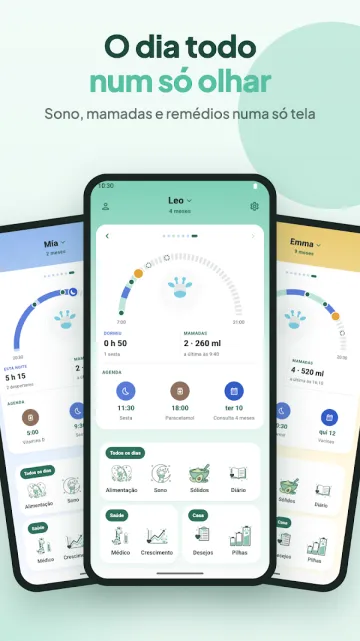

Nesta página · 10 seções
Em resumo
Para a maioria das famílias com Android, o Raffy, app que nós fazemos, é o que recomendamos: é grátis, sem anúncios e sem plano premium, funciona offline e sem conta, e acompanha o crescimento com as curvas da OMS, em inglês, espanhol, francês e português. Se você usa iPhone, o Huckleberry ou o Baby Daybook têm app para iOS; se quer orientação de sono paga e previsões de sonecas, o Huckleberry é a melhor escolha.
Transparência: nós fazemos o Raffy. Para ser justos, os apps estão ordenados pelo número de avaliações no Google Play, do maior para o menor, então o Raffy fica por último. Cada dado vem da página do próprio app no Google Play, do site oficial ou da página da App Store, consultados em 3 nov 2026 (notas e downloads do Google Play, consultados de novo em 6 nov 2026). Quando uma página não informa algo, como os idiomas do app, escrevemos "não informado" em vez de adivinhar. Os preços mudam, então confira na loja antes de pagar.
Comparação rápida
| App | Modelo de preço | Plataformas | Idiomas do app | Recursos de destaque |
|---|---|---|---|---|
| Raffy | Grátis: sem plano premium, sem anúncios, sem compras dentro do app | Só Android | Inglês, espanhol, francês, português | Sem anúncios, funciona offline e sem conta, widget de alimentação, banco de leite |
| Baby Tracker (Nighp) | Grátis com anúncios; assinatura Plus ou compra única Remove Ads | Android, iOS | App Store: 14; Play: não informado | Registros de alimentação, sono, fraldas e extração, gráficos, sincronização entre cuidadores |
| Baby Daybook | Grátis com anúncios; o Premium (mensal, anual US$59.99 ou vitalício na App Store dos EUA) remove os anúncios | Android (incl. Wear OS), iOS | App Store: 40; Play: não informado | Previsões de sono, sincronização familiar, registro de saúde, relatórios imprimíveis |
| Huckleberry | Freemium: plano grátis; assinaturas Plus e Premium | Android, iOS | App Store: só inglês; Play: não informado | Previsões de sonecas SweetSpot, planos de sono personalizados, chat de IA Berry (pago) |
| Glow Baby | Grátis com anúncios; Premium $59.99 por ano após um teste de 7 dias | Android, iOS | App Store: 4; Play: não informado | Registros de alimentação, sono e fraldas, marcos do desenvolvimento, artigos e dicas |
| Sprout Baby | Grátis para instalar; assinatura Premium com teste gratuito (preço não informado) | Android, iOS | Não informado | Gráficos de crescimento com ajuste para prematuros, registro de saúde, tendências |
"Grátis com anúncios" é o que a página do Google Play mostra ("Contém anúncios"). No Baby Tracker, no Baby Daybook e no Glow, o número de idiomas da App Store vem das páginas de iOS; as páginas deles no Google Play não informam os idiomas.
1. Raffy: Baby Tracker & Feeding
O app que nós fazemos. Um acompanhamento tranquilo de alimentação, sono e crescimento que funciona offline e não exige conta.
- Indicado para: Pais com Android que querem um app grátis e sem anúncios, o crescimento nas curvas da OMS, um widget de alimentação na tela inicial e uma interface em inglês, espanhol, francês ou português.
- Não ideal se: Quem usa iPhone, porque não há app para iOS. Também não é para quem quer previsões de sono ou orientação de sono: a página descreve registros de sono e lembretes, não previsões. Além disso, não tem registro de fraldas, exportação de dados nem como convidar um segundo cuidador.
- Preço: Grátis: sem plano premium, sem anúncios, sem compras dentro do app.
- Plataformas: Só Android (sem app para iPhone).
- Idiomas do app: Inglês, espanhol, francês e português.
- Principais recursos: Mamadeiras em ml ou fl oz e cronômetro de amamentação esquerda/direita, registro de sono com lembretes de soneca e de hora de dormir, peso, comprimento e perímetro cefálico nas curvas da OMS com percentis, planejador de sólidos e lista de alimentos já experimentados, consultas, registro de temperatura e medicamentos, diário de fotos, banco de leite materno, vários filhos, login opcional para backup e sincronização.
- Google Play: ainda sem nota em estrelas, 50+ downloads (Google Play, consultado em 6 nov 2026)
Experimente o Raffy, grátis e sem anúncios
Alimentação, sono e crescimento nas curvas da OMS em um só app Android. Sem plano premium, sem anúncios.

2. Baby Tracker - Newborn Log (Nighp)
Um registro veterano de alimentação, sono, fraldas, extração de leite e crescimento, feito pela Nighp Software. É o app com mais avaliações desta lista.

- Indicado para: Pais que querem um registro direto, com gráficos e sincronização entre cuidadores, e que não se importam com anúncios na versão gratuita.
- Não ideal se: Quem quer um app sem anúncios sem pagar, ou planos de sono elaborados por especialistas.
- Preço: Grátis com anúncios. Uma assinatura opcional "Baby Tracker Plus" remove os anúncios e adiciona avisos de horários "What's Next", e existe uma compra única "Remove Ads". O Google Play informa que o acompanhamento básico continua grátis. A página da App Store dos EUA mostra Remove Ads por $4.99, e Plus por $5.99 por mês ou $49.99 por ano.
- Plataformas: Android e iOS (iPhone, iPad).
- Idiomas do app: A App Store lista inglês e mais 13, incluindo espanhol, francês e português. A página do Google Play não informa os idiomas.
- Principais recursos: Cronômetro de amamentação, registros de mamadeira e extração, cronômetro de sono com lembretes, registro de fraldas, acompanhamento do crescimento com curvas da OMS, anotações de medicamentos e vacinas, gráficos diários a mensais, sincronização entre dispositivos e cuidadores.
- Google Play: 4,9 estrelas com 72,1K avaliações, 1M+ downloads (Google Play, consultado em 6 nov 2026)
3. Baby Daybook - Newborn Tracker
Um acompanhamento completo, com função de previsão de sono, widgets e um app para Wear OS. A página do Google Play indica a Baltapis como desenvolvedora.

- Indicado para: Pais que querem previsões de sono, uma linha do tempo visual e sincronização familiar em um só app, no Android ou no iPhone.
- Não ideal se: Quem quer ficar sem anúncios sem assinatura.
- Preço: Grátis com anúncios. Uma assinatura Premium remove os anúncios, funciona em dispositivos Android e iOS e estende o Premium aos cuidadores de perfis de bebê compartilhados. A App Store dos EUA mostra as opções Premium Mensal, Anual (US$59.99) e Vitalício, com mais de um preço indicado em algumas delas. Não encontramos um preço público único dos planos na página do Google Play nem no site oficial.
- Plataformas: Android (incluindo Wear OS) e iOS.
- Idiomas do app: A App Store lista inglês e mais 39, incluindo espanhol, francês e português. A página do Google Play não informa os idiomas.
- Principais recursos: Previsões de sono com linha do tempo visual, registros de alimentação, extração e sólidos, registro de fraldas e peniquinho, crescimento em relação às curvas do CDC e da OMS, registro de saúde (sintomas, medicamentos, consultas médicas, vacinas), sincronização familiar em tempo real, relatórios imprimíveis, widgets.
- Google Play: 4,7 estrelas com 69,3K avaliações, 1M+ downloads (Google Play, consultado em 6 nov 2026)
4. Huckleberry: Baby Tracker
Um app de acompanhamento do bebê construído em torno do sono. O plano gratuito registra sono, alimentação, fraldas e crescimento; os planos pagos adicionam as previsões de sonecas SweetSpot, rotinas e planos de sono personalizados.

- Indicado para: Pais que querem orientação sobre o sono, previsões de sonecas ou um plano de sono estruturado e estão dispostos a pagar por isso. Também serve para casas com iPhone.
- Não ideal se: Quem quer previsões sem assinatura, ou precisa do app em outro idioma, porque a página dele na App Store informa só inglês.
- Preço: Freemium. A página de preços mostra Free ($0), Plus por $5.74 por mês cobrado anualmente e Premium por $9.99 por mês cobrado anualmente (a página mostra apenas o sinal "$", sem código de moeda). O Plus adiciona as previsões SweetSpot, Schedule Creator, Insights, Enhanced Reports e registro com IA. O Premium adiciona o chat de IA Berry e os Custom Sleep Plans. Os preços dentro do app na App Store dos EUA diferem dos da página de preços, então confira o preço mostrado no app antes de assinar.
- Plataformas: Android e iOS.
- Idiomas do app: App Store: só inglês. Google Play: não informado.
- Principais recursos: Registros com um toque de sono, alimentação, fraldas e crescimento, cronômetro de amamentação, acompanhamento de sólidos e alérgenos, vários filhos, sincronização entre cuidadores, e previsões e planos de sono pagos.
- Google Play: 4,9 estrelas com 37,3K avaliações, 1M+ downloads (Google Play, consultado em 6 nov 2026)
5. Baby Tracker App | Glow
O app de acompanhamento do bebê da Glow Inc, parte de uma família de apps de saúde Glow. A página do Play o descreve como movido por IA e também inclui artigos e dicas.

- Indicado para: Pais que gostam de dicas e artigos junto dos registros e que aceitam anúncios na versão gratuita.
- Não ideal se: Quem quer um app gratuito sem anúncios, ou um acompanhamento simples sem camada de conteúdo.
- Preço: Grátis com anúncios. O Glow Premium é uma única assinatura para os quatro apps Glow: 7 dias de teste grátis e depois $59.99 por ano (a página mostra apenas o sinal "$"). O Premium inclui uma experiência sem anúncios.
- Plataformas: Android e iOS.
- Idiomas do app: A App Store lista inglês, francês e chinês (simplificado e tradicional). A página do Google Play não informa os idiomas.
- Principais recursos: Registro de fraldas, amamentação e extração, registro de alimentação, acompanhamento do sono, marcos do desenvolvimento, registros de crescimento, artigos sobre cuidados com o recém-nascido.
- Google Play: 3,9 estrelas com 14,7K avaliações, 1M+ downloads (Google Play, consultado em 6 nov 2026)
6. Baby Tracker by Sprout
Um app de acompanhamento da Sprout Apps, com registros de alimentação, sono, fraldas, crescimento e saúde. É um app bem menor que os outros no Google Play.

- Indicado para: Pais que querem acompanhar o crescimento com as curvas da OMS e do CDC, incluindo ajuste para bebês prematuros, além de um registro de saúde para consultas e vacinas.
- Não ideal se: Quem quer uma grande base de usuários e um longo histórico de avaliações: ele tem 209 avaliações no Google Play.
- Preço: Grátis para instalar, com compras dentro do app. O Premium tem um teste gratuito e renova automaticamente; a página não informa nenhum preço.
- Plataformas: Android e iOS.
- Idiomas do app: Não informado.
- Principais recursos: Cronômetro de amamentação, registros de mamadeira e sólidos, registro de sono com lembretes, fraldas, crescimento nas curvas da OMS e do CDC, marcos do desenvolvimento, registro de saúde com consultas e vacinas, gráficos de tendências, sincronização com cuidadores.
- Google Play: 4,1 estrelas com 209 avaliações, 10K+ downloads (Google Play, consultado em 6 nov 2026)
Qual você deve escolher?
- Você quer grátis e sem anúncios: o Raffy é grátis, sem anúncios e sem compras. Os outros desta lista mostram anúncios na versão gratuita ou vendem um plano premium.
- Você quer o app em espanhol, francês ou português: o Raffy está disponível nos três idiomas e em inglês. Baby Tracker e Baby Daybook também os listam na App Store.
- Você usa iPhone, ou seu parceiro usa: o Raffy não está disponível no iOS. Escolha Huckleberry, Baby Daybook ou Baby Tracker, que têm app para iOS e sincronização entre cuidadores.
- Você quer orientação de sono ou previsões de sonecas: aqui um app pago leva vantagem. Os planos Plus e Premium do Huckleberry adicionam as previsões SweetSpot e planos de sono personalizados. O Baby Daybook também anuncia previsões de sono.
Ainda não sabe se precisa de um app? Nosso planejador de janelas de vigília e nosso controle de fraldas são grátis e funcionam no navegador, e o guia de apps Android de acompanhamento do bebê explica quando uma ferramenta web basta e quando vale a pena o registro diário. Se você quer deixar o Huckleberry, leia nossas Alternativas ao Huckleberry no Android.
Segurança pediátrica
- Um app de acompanhamento registra o que você informa. Ele não diagnostica nada, e uma "previsão" de sono ou de alimentação é um guia de padrões, não uma regra.
- Se o seu bebê é difícil de acordar, recusa as mamadas, molha poucas fraldas ou parece estar mal, ligue para o pediatra, independentemente do que o app mostrar.
Perguntas frequentes
Qual é o melhor app gratuito de acompanhamento do bebê para Android?
Depende do que grátis significa para você. O Raffy é totalmente grátis, sem anúncios, sem plano premium e sem compras dentro do app, mas é só para Android. Baby Tracker (Nighp) e Baby Daybook são grátis para começar, mas mostram anúncios, e o Huckleberry tem um plano gratuito com planos pagos para previsões e planos de sono.
Existe algum app de acompanhamento do bebê para Android sem anúncios?
O Raffy não tem anúncios. No Google Play, Baby Tracker (Nighp), Baby Daybook e Glow aparecem com o rótulo "Contém anúncios", e cada um vende uma forma de removê-los. Huckleberry e Sprout não têm o rótulo de anúncios no Google Play, mas têm assinaturas pagas.
Quais apps de acompanhamento do bebê têm previsões de sono?
O Huckleberry oferece as previsões de sonecas SweetSpot nos planos pagos, e o Baby Daybook anuncia previsões de sono. O Baby Tracker (Nighp) oferece avisos de horários "What's Next" opcionais. O Raffy registra o sono e envia lembretes de soneca e de hora de dormir, mas a página dele não descreve previsões.
O Raffy está disponível no iPhone?
Não. O Raffy é só para Android. Se você usa iPhone, Huckleberry, Baby Daybook e Baby Tracker têm app para iOS.
Um app de acompanhamento do bebê pode substituir o pediatra?
Não. Esses apps registram o que você informa e podem mostrar padrões, mas não diagnosticam. Fale com o pediatra sobre qualquer preocupação.
Fontes
- Google PlayPágina do Baby Tracker - Newborn Log (consultado em 6 nov 2026)
- Nighp SoftwareSite do Baby Tracker (consultado em 3 nov 2026)
- Apple App StorePágina do Baby Tracker - Newborn Log (EUA) (consultado em 3 nov 2026)
- Google PlayPágina do Baby Daybook - Newborn Tracker (consultado em 6 nov 2026)
- Baby DaybookSite oficial (consultado em 3 nov 2026)
- Apple App StorePágina do Baby Daybook - Newborn Tracker (EUA) (consultado em 3 nov 2026)
- Google PlayPágina do Huckleberry: Baby Tracker (consultado em 6 nov 2026)
- HuckleberrySite oficial (consultado em 3 nov 2026)
- HuckleberryPágina de preços (consultado em 3 nov 2026)
- Apple App StorePágina do Huckleberry (EUA) (consultado em 3 nov 2026)
- Google PlayPágina do Baby Tracker App | Glow (consultado em 6 nov 2026)
- GlowPágina do Glow Baby e do Glow Premium (consultado em 3 nov 2026)
- Apple App StorePágina do Glow Baby Tracker (EUA) (consultado em 3 nov 2026)
- Google PlayPágina do Baby Tracker by Sprout (consultado em 6 nov 2026)
- Sprout AppsSite oficial (consultado em 3 nov 2026)
- Google PlayPágina do Raffy: Baby Tracker & Feeding (consultado em 6 nov 2026)
Última verificação: 6 nov 2026 para notas, downloads e capturas de tela do Google Play; 3 nov 2026 para preços, plataformas, idiomas e recursos. Cada dado acima foi lido nestas páginas na data indicada e pode mudar. Esta é uma comparação educativa, não é orientação médica. Política editorial